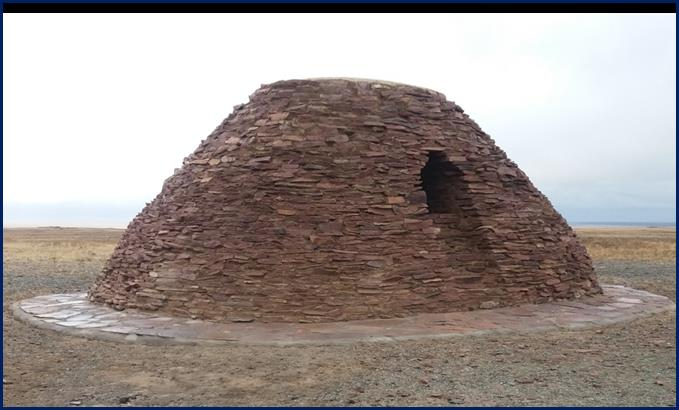

Сарыторғай жерінің «Екідің» аталуы
Екідің ауылы 1960 жылы Сарыторғай кеңшары болып құрылған. Кеңшар 1960 жылдан 1990 жылға дейін өсіп-өркендеді. Сол кездері 300 үй және бес бөлімше болған. Олар Жаңақала, Байсақал, Сарбас, Маятас, Қаракемер.
1998 жылы «Сарыторғай» совхозы жабылып, 1999 жылы Екідің ауылдық округі болып қайта қалыптасты. Жалпы халық саны – 377 адам.
Екідің Арқалық қаласынан 120-125 шақырым жерде орналасқан. Екідің ауылында XIII ғасырда тастан тұрғызылған екі үйінді бар. Бұл екі биік дің жау әскерін қарауылдау үшін салынған. Ауыл атауы да осы ескерткіштен шыққан.
Дің дегеніміз – тастан жасалған биік күзет орны. Олар биік қыратты жерде орналасқан, сыртқы келбеті киіз үйге ұқсайды. Іші де киіз үйдің ішкі көрінісі болып келеді.
1981 жылы академик Ә.Марғұланның жетекшілігімен осы Екідің ескерткіштеріне жөндеу жұмысы жүргізілген. Биылғы Елбасының "Рухани жаңғыру" бағдарламасы аясында "Казреставрация" Қызылорда филиалы келіп жөндеу жұмыстарын жүргізді.